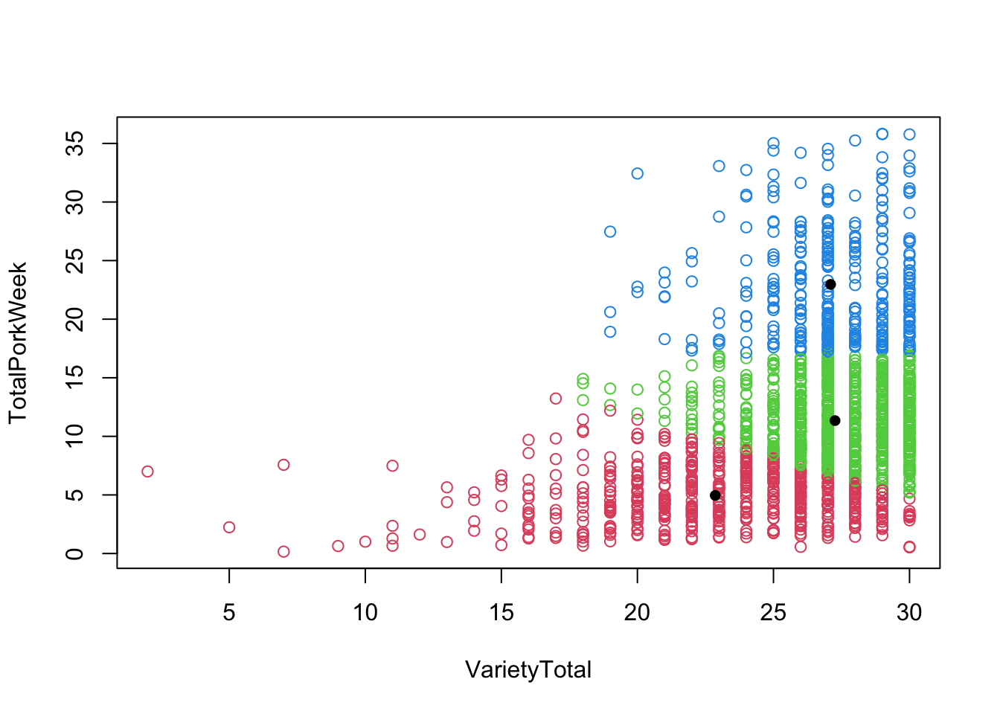

Chapter 14 CATA data (Check-All-That-Apply)
Check-All-That-Apply (CATA) data is in its raw form binary indicating whether a participant finds a product to have the attribute (1) or not (0).
Usually, such data is organized in a matrix where each row corresponds to the evaluation of one product by one respondent (sensory panelist, consumer or other). The columns describe the product ID/properties, respondent number and the attributes.
Say you for instance have 26 participants and 4 products, and further that all products are evaluated by all respondents once on 13 attributes. Your data matrix would then have 104 rows and 13 columns (with responses) and additionally columns indicating respondent, product, record id, date, etc.
In the CATA section of this book, we will use a data set with Beer. The data originates from Giacalone, Bredie, and Frøst (2013). They consist of evaluation of six different commercial beers from Danish craft brewers evaluated by \(160\) consumers on a range of different questions:
- Sensory properties: the consumers’ response to 27 sensory descriptors (s_descriptor), some of which are super-ordinate and others more detailed. Includes information about beer and respondent. One line for each beer (6) x consumer (160) . This dataset is called beercata.
- Background information: a range of questions about consumers’ demography, food neophobia, beer knowledge and use, also including appropriateness ratings (a descriptor) for 27 sensory descriptors on a 7-points scale (e.g. how appropriate do you think it is for a beer to be bitter?). The two semantic anchors were 1 = not at all appropriate and 7 = extremely appropriate. This dataset is called beerbackground.
- Hedonics: Their hedonic responses to the beer on a 7-point hedonic scale (1-7). This dataset is called beerliking.
14.1 Importing and looking at the beer data
The data appear as a part of the data4consumerscience package (see Import data from R-package)
We first have to import or load the data. Here is the import, remember to change the path for the Excel file to match your own settings:
library(readxl)
beercata <- read_excel('DatasetRbook.xlsx',sheet = 'BeerCATA')
Beerbackground <- read_excel('DatasetRbook.xlsx',sheet = 'BeerBackground')
beerliking <- read_excel('DatasetRbook.xlsx',sheet = 'BeerLiking')The packages you need to run the analyses are activated with the library function and the package name. If the package is not installed, please do this first:
## Consumer.ID Beer S_Flowers S_Beans S_Intense berries S_Caramel S_Nuts
## 1 a01 Brown Ale 0 0 0 0 0
## 2 a01 NY Lager 0 1 1 0 0
## 3 a01 Porse Bock 0 0 0 0 0
## 4 a01 Ravnsborg Red 0 0 0 0 0
## 5 a01 River Beer 0 0 1 0 0
## 6 a01 Wheat IPA 0 0 0 0 1
## S_Savoury spices S_Dessert spices S_Regional spices S_Herbs S_Citrus fruit S_Berries S_Fruit
## 1 0 0 0 0 0 0 1
## 2 0 0 0 0 0 0 0
## 3 0 0 0 1 0 0 0
## 4 0 0 0 0 0 0 0
## 5 0 0 0 0 0 0 0
## 6 0 0 0 1 0 0 0
## S_Dried fruit S_Liquor S_Bitter S_Sparkling S_Refreshing S_Fruity S_Aromatic S_Pungent S_Still
## 1 0 0 0 0 1 0 1 0 0
## 2 0 1 1 0 0 0 0 0 0
## 3 0 0 1 0 0 0 1 0 0
## 4 0 1 1 0 0 0 1 0 0
## 5 0 1 1 1 0 0 0 0 0
## 6 0 0 1 0 0 0 1 1 0
## S_Smoked S_Foamy S_Sour S_Sweet S_Warming S_Vinous
## 1 0 0 0 0 0 0
## 2 0 0 0 0 0 0
## 3 0 0 1 0 0 0
## 4 0 0 1 0 0 0
## 5 0 0 1 0 0 0
## 6 0 0 0 0 0 0## 'data.frame': 960 obs. of 29 variables:
## $ Consumer.ID : chr "a01" "a01" "a01" "a01" ...
## $ Beer : chr "Brown Ale" "NY Lager" "Porse Bock" "Ravnsborg Red" ...
## $ S_Flowers : num 0 0 0 0 0 0 0 0 0 1 ...
## $ S_Beans : num 0 1 0 0 0 0 0 0 0 0 ...
## $ S_Intense berries: num 0 1 0 0 1 0 1 0 0 0 ...
## $ S_Caramel : num 0 0 0 0 0 0 1 0 0 0 ...
## $ S_Nuts : num 0 0 0 0 0 1 0 0 0 0 ...
## $ S_Savoury spices : num 0 0 0 0 0 0 0 0 0 0 ...
## $ S_Dessert spices : num 0 0 0 0 0 0 1 0 0 0 ...
## $ S_Regional spices: num 0 0 0 0 0 0 0 0 1 0 ...
## $ S_Herbs : num 0 0 1 0 0 1 0 0 0 0 ...
## $ S_Citrus fruit : num 0 0 0 0 0 0 0 1 0 0 ...
## $ S_Berries : num 0 0 0 0 0 0 0 0 0 0 ...
## $ S_Fruit : num 1 0 0 0 0 0 0 1 0 0 ...
## $ S_Dried fruit : num 0 0 0 0 0 0 0 0 0 0 ...
## $ S_Liquor : num 0 1 0 1 1 0 0 0 0 0 ...
## $ S_Bitter : num 0 1 1 1 1 1 0 0 0 1 ...
## $ S_Sparkling : num 0 0 0 0 1 0 0 0 0 0 ...
## $ S_Refreshing : num 1 0 0 0 0 0 0 0 0 0 ...
## $ S_Fruity : num 0 0 0 0 0 0 1 1 0 0 ...
## $ S_Aromatic : num 1 0 1 1 0 1 1 1 0 1 ...
## $ S_Pungent : num 0 0 0 0 0 1 0 0 0 0 ...
## $ S_Still : num 0 0 0 0 0 0 0 0 0 0 ...
## $ S_Smoked : num 0 0 0 0 0 0 1 0 0 0 ...
## $ S_Foamy : num 0 0 0 0 0 0 1 1 0 0 ...
## $ S_Sour : num 0 0 1 1 1 0 1 0 0 1 ...
## $ S_Sweet : num 0 0 0 0 0 0 0 1 0 0 ...
## $ S_Warming : num 0 0 0 0 0 0 0 0 1 0 ...
## $ S_Vinous : num 0 0 0 0 0 0 0 0 0 0 ...##
## Brown Ale NY Lager Porse Bock Ravnsborg Red River Beer Wheat IPA
## 160 160 160 160 160 160## [1] 160From the above functions, you can see the data structure. Using the str() function will give you all the variable names. The lentgh() function is counting the number of participants as we have asked for the Consumer.ID variable in the dataset beercata.
14.2 Two versions of the data
For analyses of CATA data, we need to versions of the data:
- Raw data (binary, 0/1) with each row being responses from one evaluation (beercata dataset)
- Agglomerated to counts, with each row being one product
The agglomerated version of the counts is computed by:
beercatasum <- beercata %>%
pivot_longer(names_to = 'attrib',values_to = 'val', cols = S_Flowers:S_Vinous) %>%
group_by(Beer,attrib) %>%
dplyr::summarize(n = sum(val)) %>%
spread(attrib,n)
beercatasum## # A tibble: 6 × 28
## # Groups: Beer [6]
## Beer S_Aromatic S_Beans S_Berries S_Bitter S_Caramel `S_Citrus fruit` `S_Dessert spices`
## <chr> <dbl> <dbl> <dbl> <dbl> <dbl> <dbl> <dbl>
## 1 Brown Ale 57 54 6 63 52 10 13
## 2 NY Lager 37 10 5 69 16 30 20
## 3 Porse Bock 20 2 5 67 7 34 16
## 4 Ravnsborg … 52 25 6 71 35 11 19
## 5 River Beer 22 12 4 65 3 29 8
## 6 Wheat IPA 29 9 9 57 9 30 24
## # ℹ 20 more variables: `S_Dried fruit` <dbl>, S_Flowers <dbl>, S_Foamy <dbl>, S_Fruit <dbl>,
## # S_Fruity <dbl>, S_Herbs <dbl>, `S_Intense berries` <dbl>, S_Liquor <dbl>, S_Nuts <dbl>,
## # S_Pungent <dbl>, S_Refreshing <dbl>, `S_Regional spices` <dbl>, `S_Savoury spices` <dbl>,
## # S_Smoked <dbl>, S_Sour <dbl>, S_Sparkling <dbl>, S_Still <dbl>, S_Sweet <dbl>,
## # S_Vinous <dbl>, S_Warming <dbl>We call our new dataset beercatasum. Gather all the variables from S_Flower to S_Vinous and call them attrib. Group all data by the Beer variable (sample name column) and attrib (all of our CATA variables), then sum up the values (val) and call them n. Make a table of attrib and n. Save it all as the new name beercatasum. Then finally shown us the new data set.
… and visualized by for instance a barplot.
# summary counts over attribute
beercatasum %>%
pivot_longer(names_to = 'attrib',values_to = 'n', cols = S_Flowers:S_Vinous) %>%
ggplot(data = ., aes(x = attrib, y = n, fill = Beer)) +
geom_bar(stat = 'identity', position = position_dodge()) +
coord_flip()
To plot all attributes, we need a long data format (discussed in more detail in chapter 1 in the section Edit using Tidyverse). pivot_longer creates the long format, which is then added as the first input in the plot (represented by “.”). The different attributes are depicted on the x-axis, with the summed up values grouped by beer-type on the y-axis. The last line (coord_flip()) flips the plot, to make the attributes more readable.
For more plot types go to the Chapter on Plotting data.
14.3 Cochran’s Q test
Cochran’s Q test is a statistical test for the comparison of several products, where the response is binary, and there is repeated responses across several judges. We need the package RVAideMemoire.The data needs to be structured as the beercata is.
We can only run the model independently for one variable at a time.
For one response variable: S_Flowers
##
## Cochran's Q test
##
## data: S_Flowers by Beer, block = Consumer.ID
## Q = 63.252, df = 5, p-value = 2.581e-12
## alternative hypothesis: true difference in probabilities is not equal to 0
## sample estimates:
## proba in group <NA> <NA> <NA> <NA> <NA>
## 0.02500 0.28750 0.16875 0.10625 0.13750 0.28125The p.value is strongly significant, indicating that we cannot assume the same level of S_Flower in all beers. I.e. the beers seems different based on this characteristics. This is in agreement with the barplot above, where S_Flower is high in NY Lager and really low for Brown ale.
But in reality we only know that the beers are different overall, not which specific beers that are different. For this we need at post hoc test.
14.3.1 Post hoc test
As we observe differences based on this attribute, we pursue the question on which products stick out? And are there products which are similar? This is done by pairwise comparisons, for this we need the package rcompanion:
library(rcompanion)
PT <- pairwiseMcnemar(S_Flowers ~ Beer | Consumer.ID,
data = beercata,
test = "permutation",
method = "fdr",
digits = 3)
PT$Pairwise %>%
arrange(-abs(as.numeric(Z))) %>%
data.frame()## Comparison Z p.value p.adjust
## 1 Brown Ale - NY Lager = 0 -6.48 9.13e-11 1.37e-09
## 2 Brown Ale - Wheat IPA = 0 -5.86 4.71e-09 3.53e-08
## 3 Brown Ale - Porse Bock = 0 -4.27 1.95e-05 9.75e-05
## 4 NY Lager - Ravnsborg Red = 0 4.14 3.43e-05 1.29e-04
## 5 Ravnsborg Red - Wheat IPA = 0 -3.96 7.5e-05 2.25e-04
## 6 NY Lager - River Beer = 0 3.54 0.000402 8.48e-04
## 7 Brown Ale - River Beer = 0 -3.53 0.000415 8.48e-04
## 8 River Beer - Wheat IPA = 0 -3.51 0.000452 8.48e-04
## 9 Brown Ale - Ravnsborg Red = 0 -2.98 0.00286 4.77e-03
## 10 NY Lager - Porse Bock = 0 2.52 0.0118 1.77e-02
## 11 Porse Bock - Wheat IPA = 0 -2.36 0.0181 2.47e-02
## 12 Porse Bock - Ravnsborg Red = 0 1.54 0.123 1.54e-01
## 13 Porse Bock - River Beer = 0 0.845 0.398 4.26e-01
## 14 Ravnsborg Red - River Beer = 0 -0.845 0.398 4.26e-01
## 15 NY Lager - Wheat IPA = 0 0.135 0.893 8.93e-01The first part of the code is conducting the Post hoc test, whereas the last part of the code sorts the table from highest to lowest numerical value of Z. This is done to ease the interpretation of the table.
Most products are significantly different, while Porse Bock and Ravnsborg Red are fairly alike. This is determined by looking at the adjusted p-value, and checking whether it is exceed the desired \[\alpha\]-level. The adjusted p-values are used, as they have been adjusted to compensate for the fact that multiple pairwise comparisons are conducted.
14.3.2 For all attributes in one run (nice to know)
We use the packages tidyverse and broom for this, but need a function capable of handling Cochran’s Q-test outputs.
library(broom)
tidy.RVtest <- function(m){
r <- data.frame(statistic = m$statistic,df = m$parameter,
p.value= m$p.value,
method = m$method.test)
return(r)
}
tb_cochran <- beercata %>%
pivot_longer(names_to = 'attrib',values_to = 'val', cols = S_Flowers:S_Vinous) %>%
group_by(attrib) %>%
do(cochran.qtest(val ~ Beer | Consumer.ID,
data = .) %>% tidy)
tb_cochran %>%
arrange(p.value) ## # A tibble: 27 × 5
## # Groups: attrib [27]
## attrib statistic df p.value method
## <chr> <dbl> <dbl> <dbl> <chr>
## 1 S_Beans 114. 5 7.19e-23 Cochran's Q test
## 2 S_Caramel 108. 5 1.08e-21 Cochran's Q test
## 3 S_Flowers 63.3 5 2.58e-12 Cochran's Q test
## 4 S_Aromatic 45.8 5 9.90e- 9 Cochran's Q test
## 5 S_Sweet 36.3 5 8.24e- 7 Cochran's Q test
## 6 S_Warming 35.9 5 1.01e- 6 Cochran's Q test
## 7 S_Smoked 33.9 5 2.47e- 6 Cochran's Q test
## 8 S_Liquor 33.9 5 2.55e- 6 Cochran's Q test
## 9 S_Citrus fruit 29.4 5 1.96e- 5 Cochran's Q test
## 10 S_Dried fruit 26.0 5 8.81e- 5 Cochran's Q test
## # ℹ 17 more rowsAgain the table is sorted with the most sigficant at the top, and the least significant at the bottom. This output indicates that S_Beans is the most discriminatory attribute, while S_Pungent is the least.
For the pairwise comparisons, please apply the code for the post hoc test above per attribute.
14.4 PCA on CATA data
For an introduction PCA, please go to the Chapter Introduction to PCA and multivariate data in the first part of the book.
A PCA on the summed CATA counts will reveal the attributes associated with the individual products:
mdlPCA <- prcomp(beercatasum[,-1], scale. = T)
ggbiplot::ggbiplot(mdlPCA, labels = beercatasum$Beer)
The figure shows the scores (beers, in black) and loadings (sensory descriptors, dark red) from the PCA’s first two components. These two components describe 45.5% + 27.2% = 72.7% of the total variance in the summed data.
From the positions of the beers it is clear that the beers are similar in three pairs – Brown Ale and Ravnsborg Red, left side of panel: Porse Bock and River Beer, upper right side; NY Lager and Wheat IPA, lower right part of panel. The sensory descriptors S_Beans, Dried fruit, Caramel, Warming, Aromatic etc. are all is associated to the beer Brown ale, while Berries, Herb_Savory, Dessert, Pungent etc. is characteristic for Wheat IPA, and to some degree also NY Lager. Sour and Sparkling are the two descriptors that are most frequently mentioned for River Beer and also Porse Bock.
You can check the analysis by cross checking with the summed CATA table.
Descriptors that are located very close to each other show very similar patterns of response, i.e. they are highly correlated. An example is Caramel and Warming, which do not have same summed scores but the same pattern of high and low across samples.
From the figure we can extract the overall conclusion of similarity and differences among samples, but we need Cochran’s Q to describe which descriptors that can be used to statistically separate the samples, and which samples are different for said descriptor.